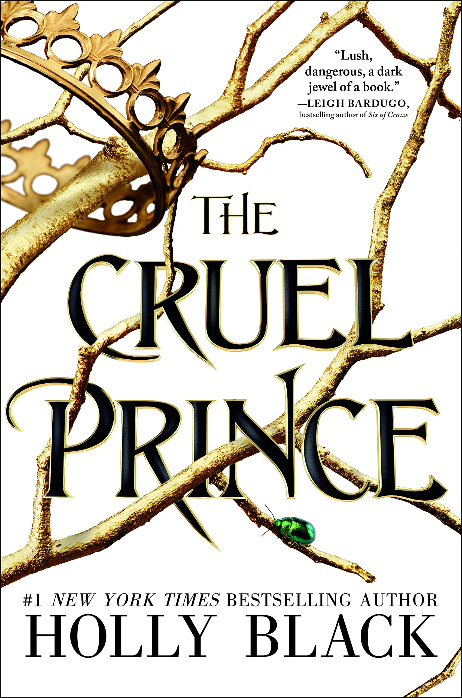

The Cruel Prince by Holy Black
Sinopsis
Of course I want to be like them. They’re beautiful as blades forged in some divine fire. They will live forever. And Cardan is even more beautiful than the rest. I hate him more than all the others. I hate him so much that sometimes when I look at him, I can hardly breathe. Jude was seven when her parents were murdered and she and her two sisters were stolen away to live in the treacherous High Court of Faerie. Ten years later, Jude wants nothing more than to belong there, despite her mortality. But many of the fey despise humans. Especially Prince Cardan, the youngest and wickedest son of the High King. To win a place at the Court, she must defy him–and face the consequences. As Jude becomes more deeply embroiled in palace intrigues and deceptions, she discovers her own capacity for trickery and bloodshed. But as betrayal threatens to drown the Courts of Faerie in violence, Jude will need to risk her life in a dangerous alliance to save her sisters, and Faerie itself.
Want this book?
You can buy it here.About Holly Black
Holly Black is the #1 New York Times bestselling author of over thirty
fantasy novels for kids and teens. She has been a finalist for an
Eisner Award and the Lodestar Award, and the recipient of the
Mythopoeic Award, a Nebula, and a Newbery Honor. Her books have been
translated into 32 languages worldwide and adapted for film. She
currently lives in New England with her husband and son in a house
with a secret library.
blackholly.com
facebook.com/HollyBlackFan
instagram.com/Blackholly